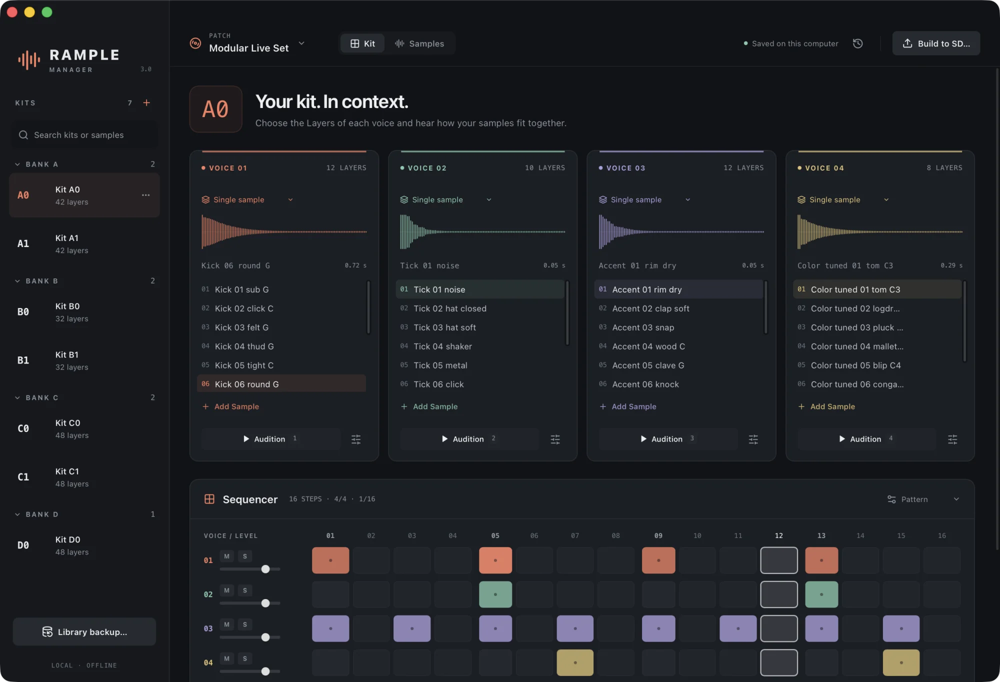
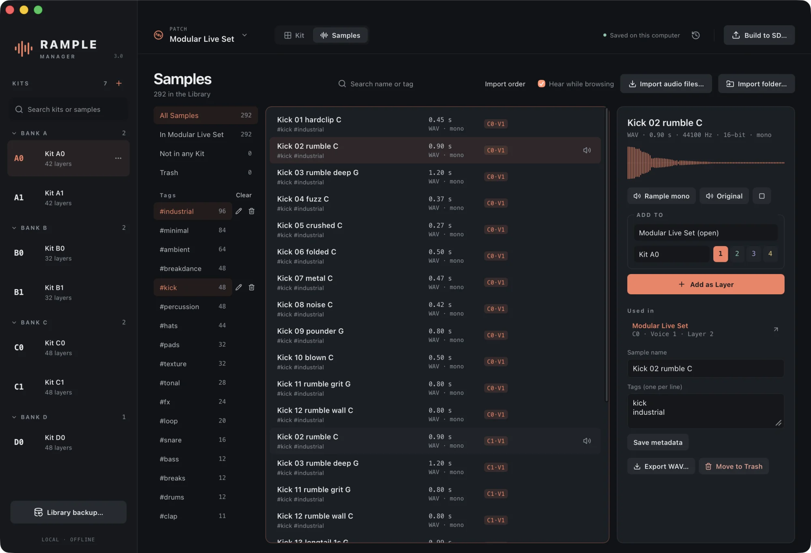
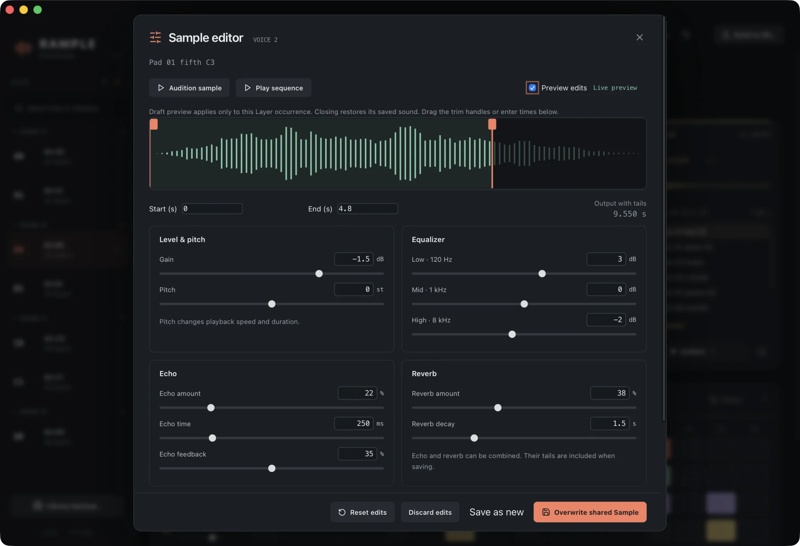
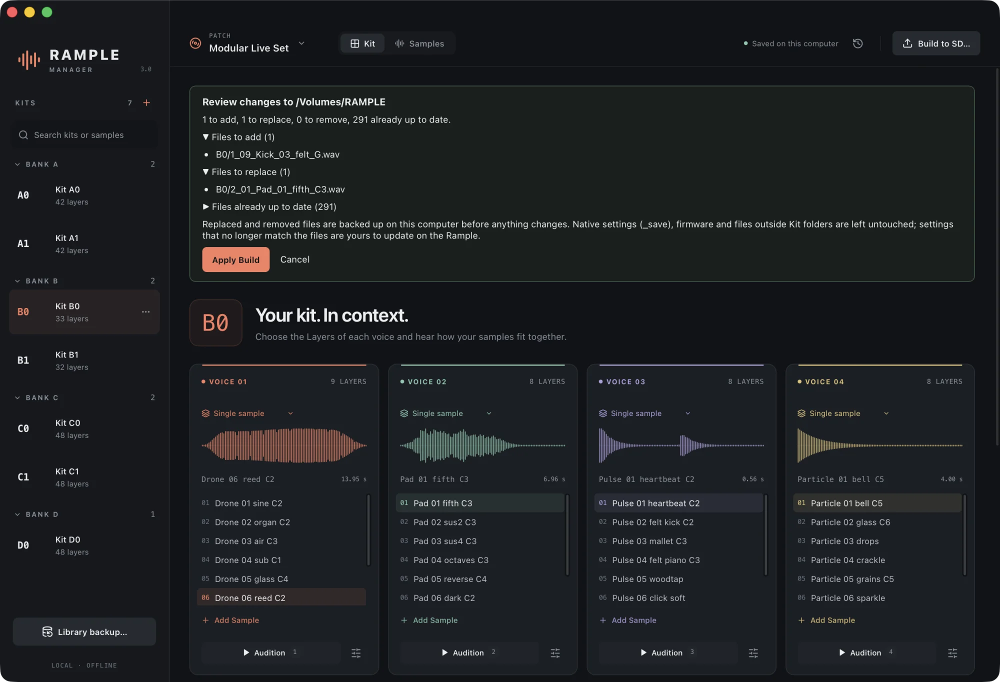

One sample Library
Import WAV, AIFF, FLAC and MP3 files or whole folders. Name, tag, search and audition every sound; your originals are never modified.
Rample Manager is a free desktop app to keep every sound in one Library, build Kits with a live four-voice sequencer, hear them exactly as the Rample will, and write the whole SD card safely.

From a folder of samples to a Kit on the card. Turn the sound on: the beat is built from the Kit on screen.
Stop renaming WAVs by hand. Rample Manager keeps your sounds organised, shows every Kit as it will play, and takes care of filenames, formats and backups when you write the card.
Import WAV, AIFF, FLAC and MP3 files or whole folders. Name, tag, search and audition every sound; your originals are never modified.
Arrange four Voices of up to 12 Layers per Kit. Drag samples onto voices, reorder Layers, duplicate and move Kits, with Undo for every deletion.
A sample-accurate 16-step sequencer with velocity, mute and solo. Audition the exact mono 44.1 kHz preparation and all five Layer modes.
Trim, gain, varispeed pitch, EQ, echo and reverb over the complete original. Save for every use of a sound or as a new Variant, and change it later.
Bring an existing SD card into a Patch with its Kits, Layer order and the Layer modes you STOREd on the module.
Review every file before it is written. Replaced files are backed up and verified first, and any Build can be restored with one click.
Three steps from a messy folder of sounds to a card that plays exactly what you heard.
Drop in sample packs, your own recordings or a whole Rample card. Everything is copied into your private Library and recognised if you import it again.
Search by name or tag, audition while browsing and add sounds to any Voice. Play the Kit with the sequencer and fine-tune each sound.
Choose the SD card. Rample Manager renders every Layer as a Rample-ready WAV with the right name and order, and leaves _save alone.
Tags and search words combine, so kick industrial finds exactly that. Every row shows where it plays in your Patch.

Edits are settings over the complete source, not destructive renders. Reopen any sound and expand a trim or remove an effect.

Build compares your Patch with the card and lists the files to add, replace and remove. Files that already match are left alone.
_save, firmware or other files
Installers are hosted on GitHub Releases. Your Library stays on your computer.
Latest release · All releases and notes
First launch. The app is free and not yet signed by Apple or Microsoft, so your system asks before opening it the first time.
macOS: drag Rample Manager to Applications and open it. If macOS blocks it, go to System Settings → Privacy & Security and click Open Anyway.
Windows: if SmartScreen appears, click More info → Run anyway.
Step-by-step instructions are in the manual.